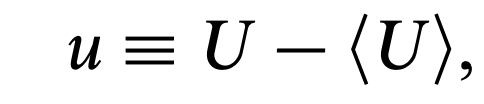
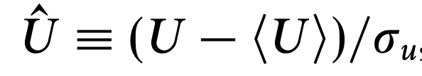
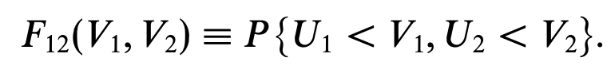
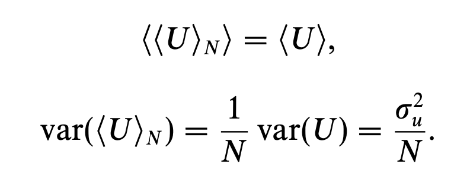
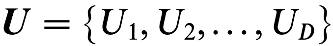
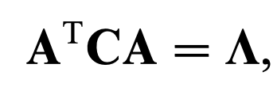
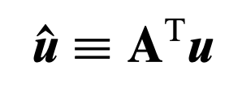

ch2에서 살펴보았던, 유체역학에서의 기본적인 용어와
governing equation
들을 이용하여 난류를 분석하기 앞서,
통계학적 개념 들도 장착해야한다.
먼저 통계학적으로 event는 다음과 같이 random varaible을 가지고 정의한다.
사건 B같은 경우, U라는 varialbe이
항상 10보다 작다면, 사건B는 'Certain'이라고 칭하고,
항상 10보다 크다면, 'Impossible'이라고 칭한다.
![[Turbulent] ch3 - The statistical description of turbulent flows](./images/img-001.png)
여기서 우리가 분석할 사건은 대부분 10보다 작을수도 클 수도 있는
Random varialbe 'U'를 분석하는 경우이다.
따라서, 우리는 사건이 일어날 확률로 계산을 해야한다.
![[Turbulent] ch3 - The statistical description of turbulent flows](./images/img-002.png)
사건 B가 일어날 확률.
여기서 새로운 함수가 정의된다. 위 case를 보면 전부 부등식으로,
사건이 일어날 확률을 계산하므로, 부등식의 기준이 되는 그 값을 변수로 하는 함수를
Culmulative Distribution Function(CDF)
라고 정의한다.
![[Turbulent] ch3 - The statistical description of turbulent flows](./images/img-003.png)
F(10) 이 위의 사건 B가 일어날 확률을 의미한다.
여기서 아주 중요한 함수를 하나 더 정의하고 넘어가자.
Probability Density Function(PDF)은 위 CDF를 변수 V로 미분한 함수이다.
![[Turbulent] ch3 - The statistical description of turbulent flows](./images/img-004.png)
미분한 값이 도대체 무엇을 의미하는 지를 이해하기 위해서 밑의 그래프를 살펴보자.
![[Turbulent] ch3 - The statistical description of turbulent flows](./images/img-005.png)
f(V)를 살펴보면 저 면적이 결국 확률값을 의미한다.
(왜 굳이 CDF가 있는데 미분을 하여,
새로운 함수(PDF)를 정의해
확률을 계산하는 이유는
블로그 아래 글 속에서 알 수 있을 것이다.)
자 위에 함수들을 정의하였고,
이제 계속해서 통계학에서 기본적으로 사용되는 개념들을 정의해보자.
먼저, 평균의 정의는 직관적으로 아래와 같이 정의할 수 있다.
![[Turbulent] ch3 - The statistical description of turbulent flows](./images/img-006.png)
Definition of Mean by using PDF
Random variable U로 이루어진 함수의 평균도 아래와 같이 정의되고,
key point in here is that U의 PDF F(v)를 그대로 사용한다는점.
![[Turbulent] ch3 - The statistical description of turbulent flows](./images/img-007.png)
Mean of Function of 'U'
어떠한 random variable이 평균으로부터 얼마나 떨어졌는가를 나타내는
fluctuation

fluctuation
그리고 그 전체 영역에 대해서 떨어진 정도를 확률 평균으로 나타낸 값이
variance
.
(제곱을 한 이유는 떨어진 정도 -> 거리 -> 즉 양수이므로, 음수 값을 변환하기 위해서)
![[Turbulent] ch3 - The statistical description of turbulent flows](./images/img-009.png)
Variance
위 전체 떨어진 정도를 적분한 값을 표준화 시킨 값.
![[Turbulent] ch3 - The statistical description of turbulent flows](./images/img-010.png)
Standard deviation
떨어진 정도의 확률평균을 n차수까지 곱하여 나타낸 값.
![[Turbulent] ch3 - The statistical description of turbulent flows](./images/img-011.png)
nth central moment.
여기서 우리는 어떠한 서로 다른 확률분포들을 쉽게 비교하기 위해서,
강제로 평균 - 0, 표준편차 - 1. 인 확률분포로 만들어버리는
Standardalization
(표준화)과정을 다음과 같이 정의 할 수 있다.

new random varaible U hat
Joint random variable.
지금까지는 random variable 한개에 대해서 정의하였지만,
이제부터는 random variable 여러개 기준으로 확률분포를 분석해보자.
먼저 U1,2를 랜덤변수로 두는 CDF의 경우 아래와 같이 정의할 수 있다.

즉, U1 이 V1보다 작고 동시에 U2 V2보다 작은 (U1,U2)의 pair가 존재할 확률을 나타낸다.
위 정의를 기반으로, U1이 impossible한 경우는 U2의 값과 상관없이 0
![[Turbulent] ch3 - The statistical description of turbulent flows](./images/img-014.png)
U1이 Certain한 경우는 U2 값으로 인해서 확률이 정해지므로,
결국 Joint CDF는 U2의 CDF와 같은 확률을 띄게 된다.
![[Turbulent] ch3 - The statistical description of turbulent flows](./images/img-015.png)
하나의 random variable일때와 동일하게 PDF는 CDF의 미분으로 정의되고,
변수가 두개이므로 각각에 대하여 미분을 진행해주자.
![[Turbulent] ch3 - The statistical description of turbulent flows](./images/img-016.png)
PDF의 강점은 영역 적분을 통해서 확률값을 도출하는 것이다.
따라서, 아래와 같이 두 확률변수 영역에 대하여 각각적분을 해주면, 우리가 원하는 확률값을 얻을 수 있다.
![[Turbulent] ch3 - The statistical description of turbulent flows](./images/img-017.png)
CDF가 non decresaing function인 관계로, 그 미분값인
Joint PDF는 0보다 크거나 같고,
전체 영역에 대해서 적분 값 = 1이다.
![[Turbulent] ch3 - The statistical description of turbulent flows](./images/img-018.png)
우리가 분석하고 있는 두가지 확률변수(U1,U2)로 이루어진 함수 Q(U1,U2)의 평균값은 아래와 같이 정의된다.
![[Turbulent] ch3 - The statistical description of turbulent flows](./images/img-019.png)
여기서 이제 굉장히 중요한 개념이 등장한다.
Covariance
![[Turbulent] ch3 - The statistical description of turbulent flows](./images/img-020.png)
각 확률변수에 대해 Fluctuation u1,u2의 물리적 의미는
u1 - 확률변수 V1이 평균으로부터 얼마나 떨어졌는가를 나타내고,
u2 - 확률변수 V2가 평균으로부터 얼마나 떨어졌는지를 나타낸다.
따라서, 그. 두개의 곱을 전체 영역에 대해서 u1*u2의 평균을 적분한 값, cov(U1,U2)가 크다면
두 (U1,U2)는 전체적으로 평균으로부터 멀리 떨어져 있는 분포라는 것을 의미한다.
뿐만아니라, cov(U1,U2) < 0. 이라면,
평균으로부터 떨어진 방향이 보통 두 변수가 다르다는 점을 의미한다.
cov(U1,U2) > 0 인 경우는
평균으로부터 떨어진 방향이 두 변수가 같다 라는 점을 의미한다.
이제 위 ov(U1,U2)값을 표준화하여 -1,1사이의 값을 가지게 하는
correlation coefficient는 다음과 같이 정의된다.
![[Turbulent] ch3 - The statistical description of turbulent flows](./images/img-021.png)
Conditional PDF
고등학교때 배웠던 개념이다, 즉, U1 = V1인 상황에서 V2의 확률분포 PDF를 구하는 것이다.
![[Turbulent] ch3 - The statistical description of turbulent flows](./images/img-022.png)
Normal and Joint normal distribution
Random Variable U(velocity)가 있다고 하자.
여기서, 우리는 U를 여러번 측정 하고자 한다.
여기서 n번째 측정한 U의 값을 U(n)이라고 정의하자.
그랬을때, n 은 전체 n번 측정값의 평균을 의미한다.
![[Turbulent] ch3 - The statistical description of turbulent flows](./images/img-023.png)
As known As 'Ensemble Average'
여기서 아주 중요한 것은, 측정한 값이 매번 다르기 때문에,
n번 측정한 값의 평균(n) 도 Random variable이다.
재밌는 점은 새롭게 정의한 random variable n 과 원래 기존의 U의 random varaible의 평균과 표준편차의 관계식은
처음에 정의한 평균과 표준편차의 정의(적분이용)를 활용하여 아래와 같이 나타낼 수 있다.

Relation between two different Random Variable n and U
여기서 위 평균과 표준편차를 가지고, Standarlized Random variable로 바꾸어 주자
n -> U hat (standarlization)
![[Turbulent] ch3 - The statistical description of turbulent flows](./images/img-025.png)
mean -> 0, Stdeviation -> 1로 강제로 만드는 과정 = 표준화
central limit Theroem
자 여기서 central limit Theorem은 N이 무한으로 갈때,
즉 끊임없이 반복한 측정한 값을 가지고 random variable을 정의하고,
표준화과정을 거쳐 U^ 으로 얻은 확률분포의 PDF는
Standarlized Normal Distribution Function이라는 이론이다.
![[Turbulent] ch3 - The statistical description of turbulent flows](./images/img-026.png)
표준정규분포 PDF 함수.
(우리가 아는 종 모양의 pdf 라는 것이다.)
![[Turbulent] ch3 - The statistical description of turbulent flows](./images/img-027.png)
Joint normal distribution
여기서 N개의 측정한 값 각각 U1,U2, U....Un 분포가 위의 표준정규분포를 띈다면,
우리는 전체 각각의 random variable을 묶어 하나의 벡터로 표현할 수 있다.
벡터를 random vector(U)라고 칭하자.

여기서, 벡터의 component 각각 평균, fluctuation을 계산가능하므로,
평균 벡터, 편차 벡터를 다음과 같이 정의하자.
![[Turbulent] ch3 - The statistical description of turbulent flows](./images/img-029.png)
이제 서로다른 random variable끼리의 분포 상관관계를 나타는
Covariance Matrix(n*n tensor)를 정의할 수 있다.
![[Turbulent] ch3 - The statistical description of turbulent flows](./images/img-030.png)
여기서 만약에, U벡터의 모든 성분 random variable들이 normally distributed 하다면, 우리는
U벡터는 joint normal distributed하다고 정의하고, Joint PDF는 다음의 형태로 정의할 수 있다.
![[Turbulent] ch3 - The statistical description of turbulent flows](./images/img-031.png)
여기서 Covariance Matrix를 조금더 분석해보고 이번 글을 마무리하자.
C는 symmetric tensor임은 자명하다
따라서, 우리는 diagonal decomposition을 아래와 같이 진행할 수 있다.
(A는 eigen vector 로 이루어진 orthonormal vector, 우항은 eigen values로 이루어진 대각행렬)

![[Turbulent] ch3 - The statistical description of turbulent flows](./images/img-033.png)
Diagonal Matrix composed w/ the eigen values of C
여기서 대각분해후, 변환된 covariance Matrix를 이루는 new fluctuation vector는
아래와 같이 나타낼 수 있다.

![[Turbulent] ch3 - The statistical description of turbulent flows](./images/img-035.png)